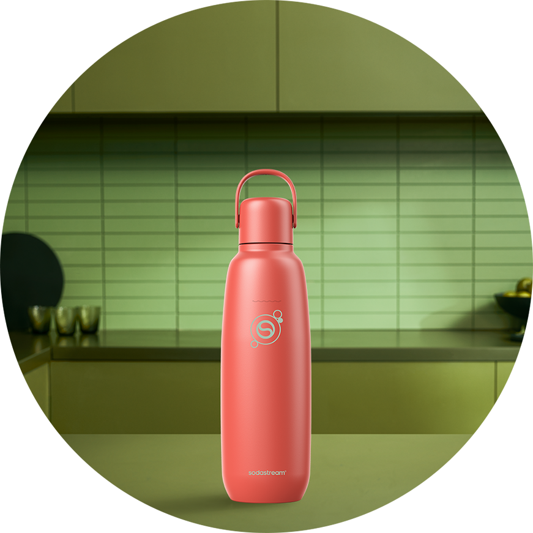
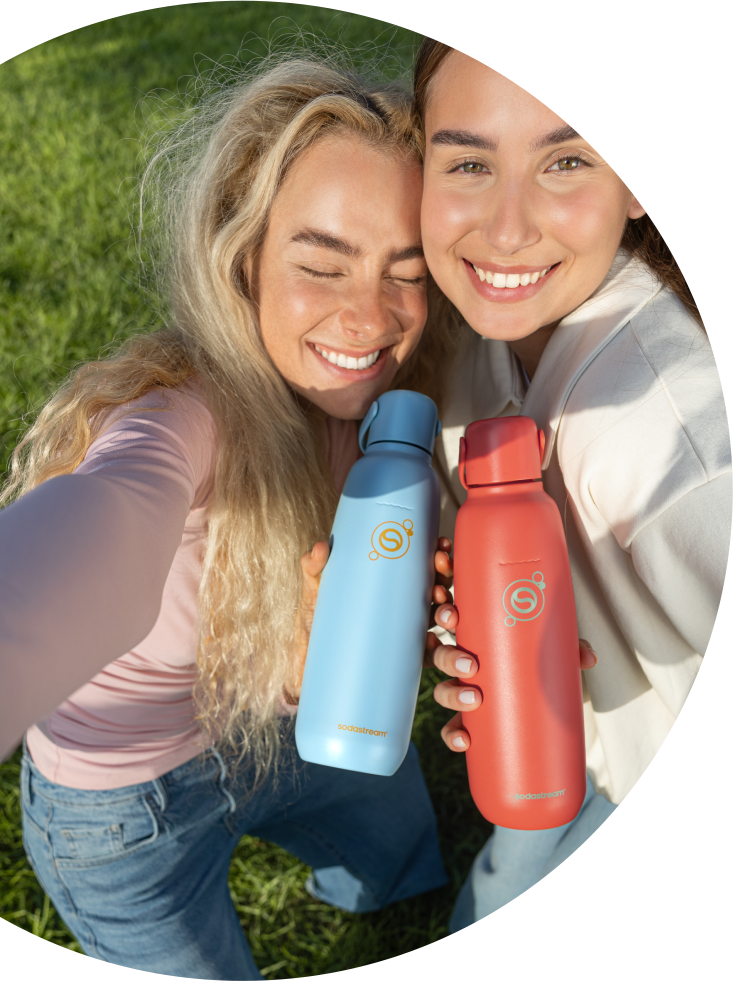
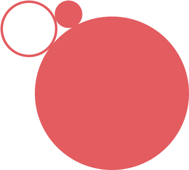
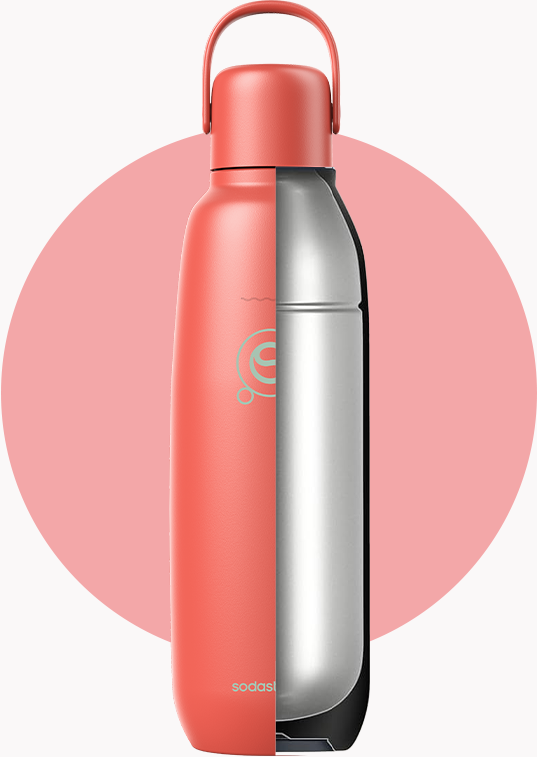
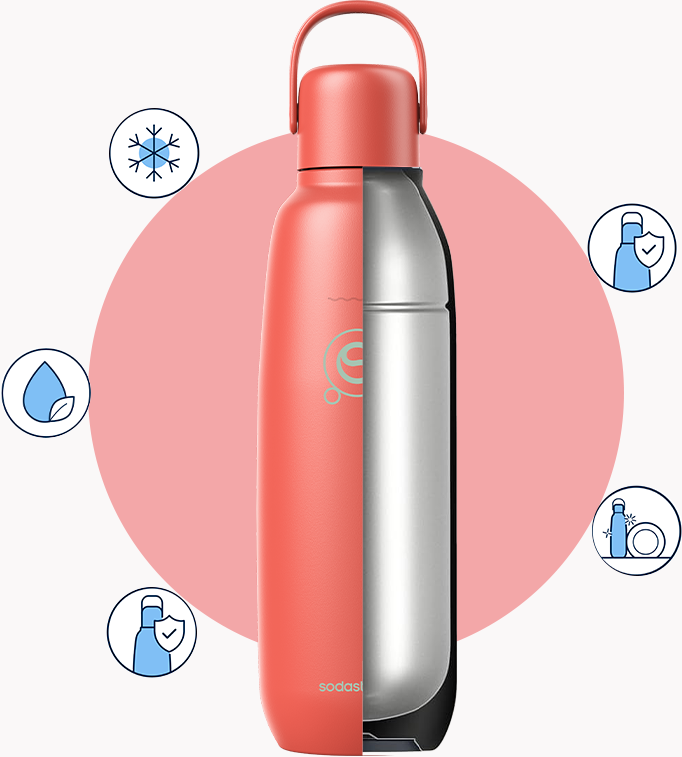
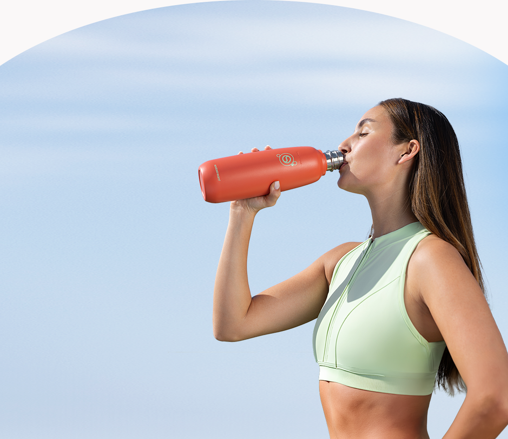
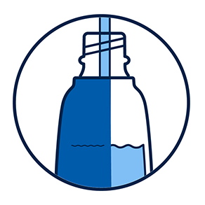
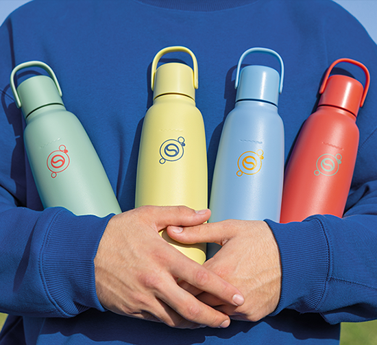
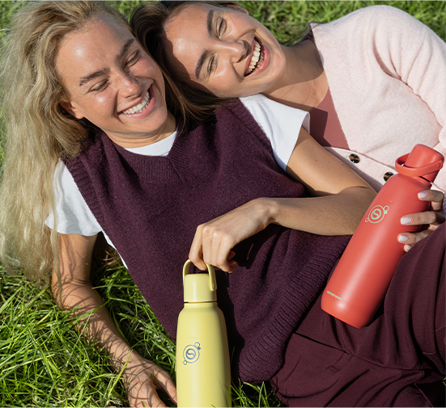
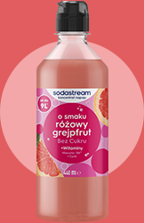

fizz & go™
butelka termiczna
do gazowania wody,
pomarańczowa, 0,9 l
idealnie schłodzone napoje nawet do
12h
idealnie schłodzone napoje nawet do
12h

złap ulubione bąbelki do termicznej butelki i zabierz je ze sobą!
Od porannego wyjścia z domu po spontaniczne plany po zmroku — pomarańczowa butelka Sodastream® fizz&go™ zadba o Twoje nawodnienie w każdej sytuacji! To wielofunkcyjne rozwiązanie 3 w 1, które łączy funkcjonalność butelki do saturatora, bidonu sportowego i termosu, dzięki czemu utrzymuje chłód napojów aż do 12 godzin. Będzie Ci towarzyszyć w każdym momencie dnia — w pracy, podczas treningu, czy podczas wieczornego wyjścia z przyjaciółmi. Jej nowoczesny, stylowy design sprawia, że świetnie dopasuje się do każdej stylizacji.

energetyzujący
pomarańczowy

Intensywna barwa, która zawsze zwraca na siebie uwagę. Wybierz ten kolor, jeśli chcesz się wyróżnić i wprowadzić wokół siebie pozytywną energię.
energetyzujący kolor w duecie z funkcjonalnością
Butelka Sodastream fizz&go to rozwiązanie, które dzięki swojej funkcjonalności będzie Cię wspierać przez cały dzień. To model stworzony do intensywnego użytkowania — odporny na uszkodzenia i korozję, a przy tym wyjątkowo szczelny, dzięki czemu napój zachowuje bąbelki na dłużej, a Ty nie musisz obawiać się przeciekania. Posiada wygodny uchwyt, dzięki któremu zabierzesz ją ze sobą wszędzie — do pracy, na trening czy na wycieczkę. Utrzyma przyjemny chłód napoju nawet do 12 godzin, a po całym dniu bez problemu umyjesz ją w zmywarce, by była gotowa do działania następnego dnia.


Napój chłodny
do 12 godzin
Szczelny korek
i hermetyczna
konstrukcja
Materiał
bez BPA
Nadaje się
do mycia w
zmywarce
Wytrzymała stal
nierdzewna 18/8
Napój chłodny do 12 godzin
Szczelny korek i hermetyczna konstrukcja
Materiał bez BPA
Nadaje się do mycia w zmywarce
Wytrzymała stal nierdzewna 18/8
codzienność w eko-wydaniu
Eko-zmiana może być szybka
i naturalna! Zamiast sięgać
po kolejną plastikową butelkę
czy napój w puszce, wybierz trwały model Sodastream fizz&go™.
Dzięki temu możesz korzystać
z kranówki, dbać o nawodnienie
i upraszczać codzienne wybory — z myślą o środowisku. To prosty krok w stronę świadomego
i wygodnego stylu życia.

gazuj, miksuj, smakuj

Wlej wodę z kranu do butelki
Sodastream® fizz&go™,
a następnie zamontuj
w saturatorze.

Aby uzyskać pożądany poziom bąbelków, kilka razy naciśnij przycisk gazowania.

Jeśli chcesz, dodaj ulubiony syrop Sodastream® lub inne dodatki. Lekko wstrząśnij i ciesz się smakiem!
Sodastream® fizz&go™ — dowiedz się więcej
o butelce do zadań specjalnych

Z jakimi saturatorami można używać butelki SSodastream® fizz&go™?
Saturatory Sodastream Terra, Art, Mix, Duo i Ensō
to modele, które są w pełni kompatybilne
z wielorazową butelką Sodastream fizz&go™.
Czy butelka Sodastream® fizz&go™
nadaje się
do mycia w zmywarce?
Tak — została zaprojektowana z myślą o wygodzie, dlatego możesz ją bezpiecznie umyć w zmywarce.
Czy z butelki Sodastream® fizz&go™
można
pić kawę?
To praktyczny bidon termiczny, do którego
możesz wlewać też ciepłe napoje, takie jak kawa
czy herbata*.
*UWAGA! Nie nasycaj gazem wody o temperaturze powyżej 45°C.
Zachowaj szczególną ostrożność podczas
przechowywania
gorących płynów w butelce i otwierania butelki zawierającej gorące płyny.
Sodastream® fizz&go™ – rozwiązanie,
które nadąża za Twoim planem
funkcjonalność, która Cię nie zawiedzie
Żyj na swoich zasadach i nie zwalniaj tempa
ani na chwilę! Z butelką termiczną Sodastream fizz&go™ zadbasz o nawodnienie w
trakcie zajęć sportowych, zakupów czy
spotkań ze znajomymi. Zawsze dotrzyma Ci kroku, utrzymując napój
chłodny nawet do 12 godzin.
styl, który do Ciebie pasuje
Praktyczne rozwiązania wcale nie muszą być
nudne! Pomarańczowa butelka Sodastream fizz&go™ wyróżnia się nowoczesnym designem i kolorem,
z którym zawsze możesz być sobą. Jednocześnie
jest funkcjonalna, wyjątkowo szczelna i dostosowana do mycia w zmywarce.
wygoda, którą zabierzesz w podróż
Ulubiony napój możesz mieć zawsze przy sobie,
także w aucie! Termiczna butelka Sodastream fizz&go™ doskonale pasuje do uchwytów
samochodowych, zapewniając wygodę w
trasie, nawet na dłuższych dystansach.
upominek, który zachwyca
Podaruj prezent, o którym długo będzie
głośno! Butelka termiczna Sodastream fizz&go™
to funkcjonalny gadżet do codziennego użytku,
który idealnie nadaje się na prezent dla kogoś bliskiego. Przyciąga wzrok unikalnym
kolorem,
który podkreśla styl, dzięki czemu szybko stanie się ulubionym towarzyszem
obdarowanej
osoby.

z syropami Sodastream® każdy napój może być inny

ulubione smaki w Twoim stylu
Zamień ciężkie zgrzewki na własne wersje kultowych napojów przygotowanych na bazie syropów Sodastream®. Do wyboru masz między innymi syropy o smaku Pepsi®, 7UP®, Mirindy® czy MTN Dew®. Niech uświetnią imprezę z przyjaciółmi albo wieczór przy planszówkach!

klasyki z nowoczesnym twistem
Napoje przygotowane z dodatkiem syropów Sodastream® o smaku Coli, Tonicu czy Cytryny Limonki to idealna baza do eksperymentów. Połącz przygotowany napój z cytrusami i rozmarynem, i stwórz wersję, która zachwyci Twoich gości.

owocowa słodycz
bez dodatku cukru
Masz ochotę na coś słodkiego, ale unikasz cukru? Postaw na owocowe syropy Sodastream® i ciesz się pysznym, słodkim smakiem napojów — bez ograniczeń! Dodaj zioła, eksperymentuj z proporcjami i stwórz napój dokładnie taki, jaki lubisz!